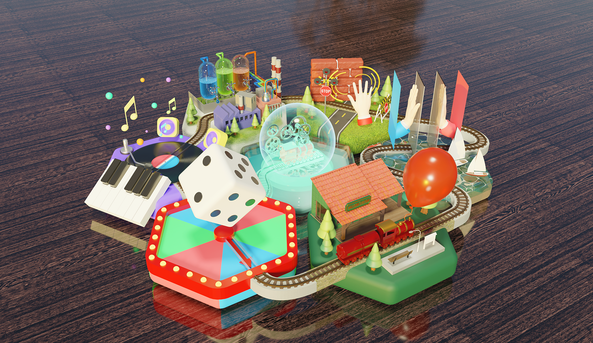
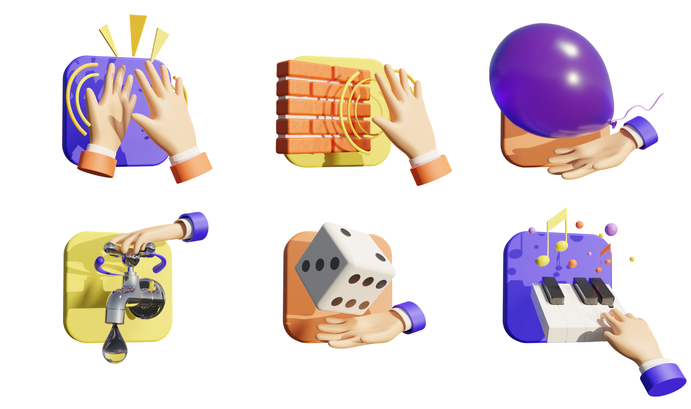

SeeZ Game Design
GoQba Technology Internship | Jan - Feb 2021
Introduction
SeeZ is a digital therapeutics game project designed to support upper limb rehabilitation. Currently developed for research purposes, it offers six types of VR games: High-Five, Push the Wall, Throw the Balloon, Turn the Faucet, Throw the Dice, and Play the Piano.
Challenge
“How can we ensure a consistent and immersive user experience across all six games, enhancing both engagement and enjoyment?”
Redesigning Icons
The icons were redesigned within a cohesive design system, enhancing clarity in feature representation and emphasizing the game's three-dimensional aspects.
Creating Intro Video
The intro video serves as a placeholder during loading while also showcasing the company's identity and SeeZ's core value: making rehabilitation a fun and engaging experience.
Creating Story Mode
To enhance the gaming experience, we integrated six independent games into a unified journey. I designed "Story Mode," allowing players to seamlessly explore each game within a connected storyline, fostering a sense of progression and achievement.